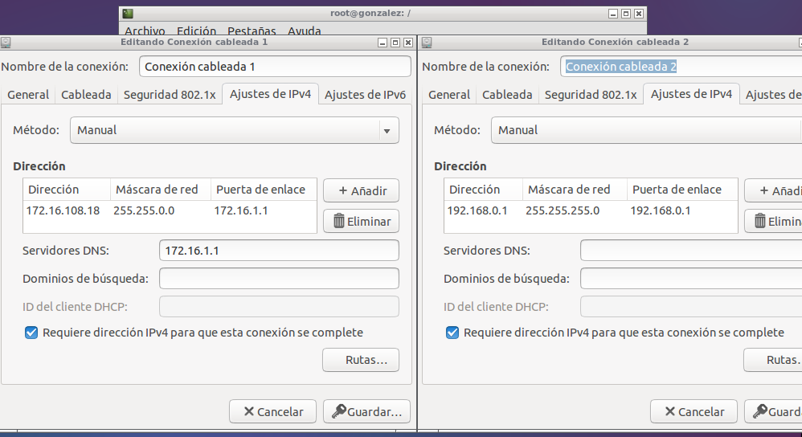
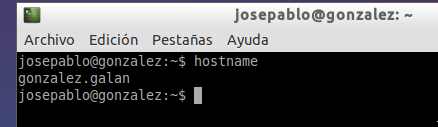
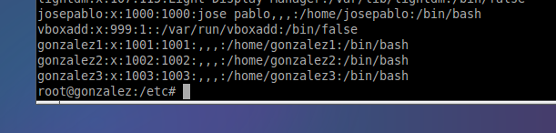
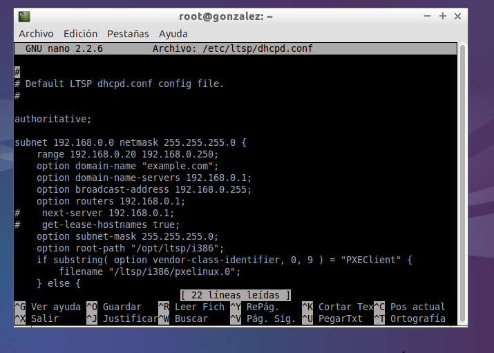
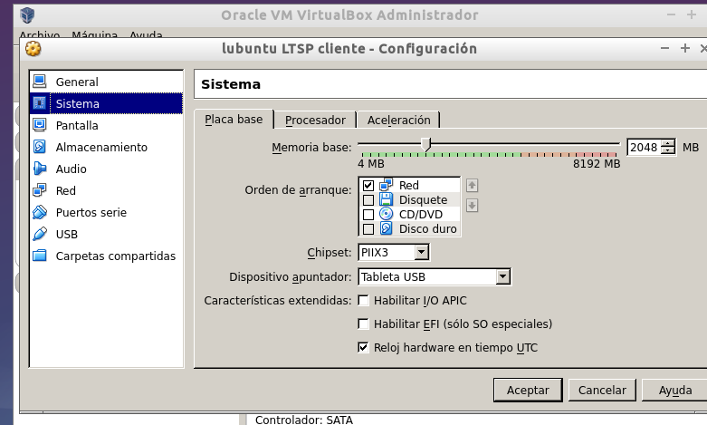

- Módulo: Administración de sistemas operativos
- Título del trabajo ADD01
- Componentes del grupo: Jose Pablo González Galán
- Curso Académico: 2014/2015
- Fecha de entrega: 25/09/2014
Para realizar esta actividad, he usado dos maquinas virtuales con el SO lubuntu (un servidor y un cliente). De inicio configuré el servidor con dos interfaces de red, interfaz de red interna y externa (adaptador puente). A continuación asigné IPs estáticas a ambas maquinas.
IP estática der servidor---> 172.16.108.18
IP estática del cliente---> 192.168.0.1
Nombre de la máquina como se pedía en la actividad.
Crear 3 usuarios locales.-Usuarios: Gonzalez1, Gonzalez2 y Gonzalez3
Luego instalé el servicio con el comando "apt-get install ltsp-server-standalone", "ltsp-build-client" y "apt-get install openssh-server", y adapté el fichero de configuración (/etc/ltsp/dhcpd.conf) de la tarjeta de red interna del servidor.
Para finalizar la actividad, creo la segunda maquina virtual con SO lubuntu con las siguientes características y compruebo que funciona.
